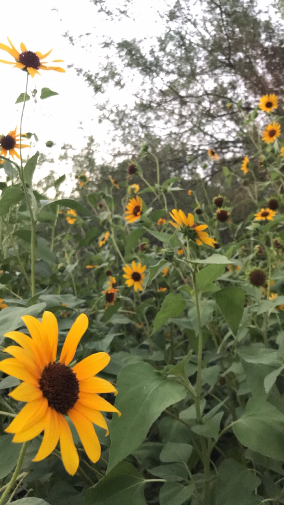

Hello my name is Guillermo Morales and I am a currently enrolled in the Full Stack Web Development boot camp program at Bloc Web Development.
I love being part of a process that allows me to witness initial ideas being drawn on the back of a napkin and transform those ideas into robust, creative and responsive web applications for the world to see. I am currently a property manager for an apartment community that my company recently acquired and through that process I fell in love with my passion of web developing by meeting a group of students in our lounge who were all studying to be web developers. Ever since I met them, I was intrigued, hooked and now I am here creating my portfolio and displaying it to company’s whom I will hopefully be part of sometime very soon.
When I am not writing code, you can find me training at the gym for an upcoming Body building competition or spending quality time with my family making lasting memories.

List of Technologies I have used throughout this program
Link to my Live App https://guillermomorales94.github.io/Web-Application/.
Link to my Repo for github https://github.com/Guillermomorales94/Web-Application
Snippets of my Projects Insert
Project title: Fizz Bang Pop – Web Development Quiz
Project description (Fizz Bang Pop is my very professional project that I completed within the Bloc Web Development program. This Quiz takes the user through a set of Beginner Web developer multiple questions.